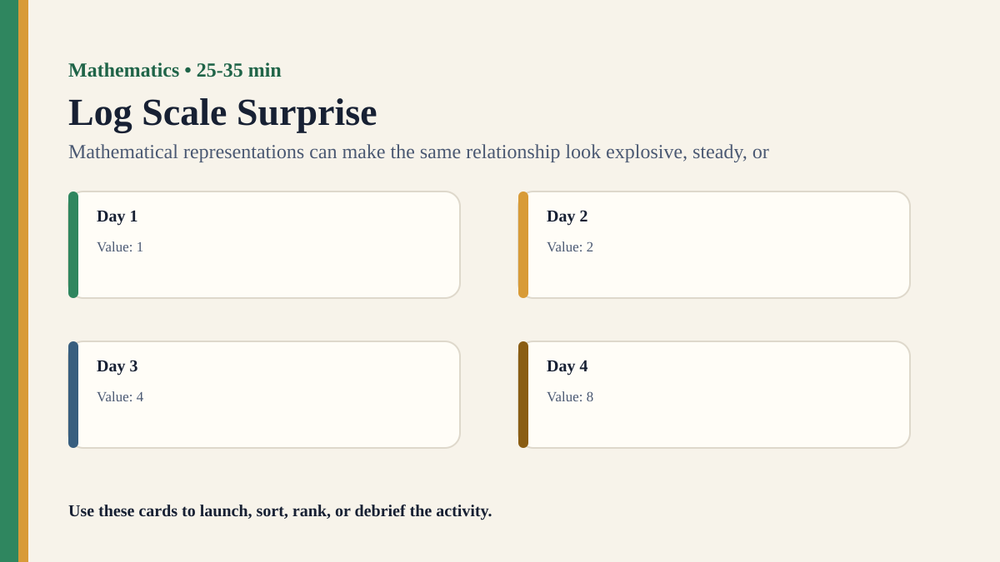

Detailed activity
Log Scale Surprise
Students compare linear and logarithmic graphs and see how scale choice changes visual interpretation.
Free classroom activity
Big Idea
Mathematical representations can make the same relationship look explosive, steady, or manageable.
Teacher Summary
Students explore how scale choices affect mathematical interpretation.
Use graph comparison to connect representation, understanding, and communication.
Materials
- A dataset that grows multiplicatively, such as doubling values.
- Linear and logarithmic graph templates.
Ready to run
Classroom Resource Pack
Use the printable pack for concrete stimulus cards, a student recording sheet, teacher prompts, and a visual prompt image.
Visual Prompt

Student Prompt
Inspect the Log Scale Surprise stimulus. Record one first claim, the evidence you used, your confidence, and what would make you revise.
Actual Lesson Questions
| # | Question for students | Teacher cue |
|---|---|---|
| 1 | Write one claim in a complete sentence. | Teacher cue: look for a clear claim, not just a description. |
| 2 | List two pieces of evidence. | Teacher cue: students should name visible words, data, source features, method features, or contextual clues. |
| 3 | Separate observation from interpretation. | Teacher cue: this is where assumptions, framing, models, or perspective usually appear. |
| 4 | Circle one confidence level and justify it. | Teacher cue: confidence is data for the debrief, not a grade. |
| 5 | Name one piece of missing information. | Teacher cue: push for method, source, context, comparison, or definitions. |
| 6 | Answer using the activity as evidence. | Teacher cue: students should move from the classroom example to a general TOK issue. |
Concrete Stimulus Packet
Stimulus
Pattern or Proof Card
Sequence A: 2, 4, 8, 16, 32. Student claim: “The next number must be 64.” Alternative rule: double until 32, then subtract 10. Both fit the visible pattern so far.
Use this to separate pattern confidence from proof or model choice.Stimulus
Log Scale Surprise Example
Dataset: 1, 2, 4, 8, 16, 32, 64 over seven days.
Use this as the activity-specific version of the stimulus.Stimulus
Comparison / Twist Card
Question: does the graph show runaway growth, steady multiplicative growth, or both?
Reveal after students commit to their first judgement.Teacher Key / Reveal
The key move is not the “right answer”; it is the moment students see how mathematical representations can make the same relationship look explosive, steady, or manageable.
Setup Notes
- Use simple doubling data so students can see both the numerical and visual relationship.
- Let students describe each graph before teaching the term logarithmic scale.
Ready-to-Use Examples
- Dataset: 1, 2, 4, 8, 16, 32, 64 over seven days.
- Question: does the graph show runaway growth, steady multiplicative growth, or both?
- Notation card: shows how a multiplicative change becomes an equal step on a log scale.
Run Resources
- Linear and logarithmic graph templates for the same dataset.
- Graph purpose cards: communicate urgency, compare growth rates, inspect proportional change.
Procedure
- Give students a simple growing dataset.
- Groups plot or inspect the same data on a linear graph and a logarithmic graph.
- Students describe the story each graph seems to tell.
- Groups identify which graph is better for different purposes.
- Debrief how mathematical representation affects knowledge claims.
Teacher Language
- Both graphs can be accurate, but they serve different questions.
- What does this scale make visually obvious, and what does it hide?
TOK Debrief Questions
- Knowledge question: How does mathematical representation shape understanding?
- Can one graph be more truthful than another if both are accurate?
- What responsibilities come with choosing a scale?
Knowledge Questions
- How does mathematical representation shape understanding?
- Can accurate graphs tell different stories?
- What makes a graph responsible?
Sample Student Output
- The linear graph made the later values dominate the story.
- The log graph made equal ratios look like equal steps.
Exhibition Object Idea
The same dataset shown on linear and logarithmic scales.
Adaptations
- Support: use pre-drawn graphs.
- Challenge: ask students to decide which scale is more responsible for a given audience.
Extension Tasks
- Students find a real public graph and ask what scale would change the visual story.
- Compare scale choice with headline framing and dashboard design.
Teacher Notes
Do not let technical graphing dominate; the TOK focus is representational choice.
Use simple values so students can see the visual effect quickly.